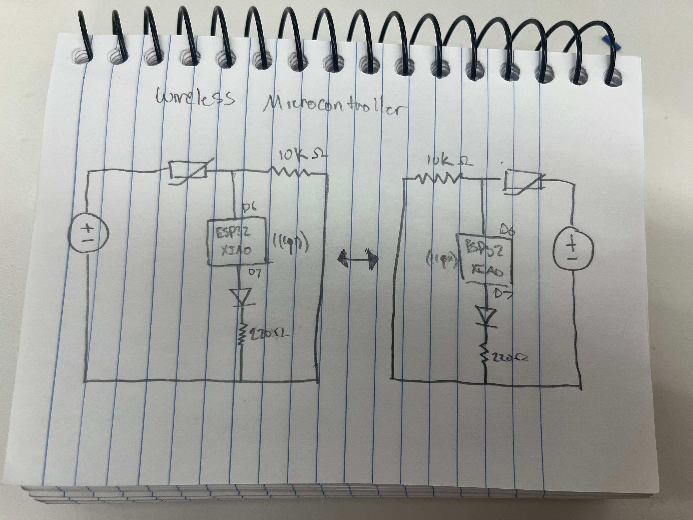

<div class="textcontainer">
<p class="margin"> </p>
<h3>Week 9: Radio, WiFi, Bluetooth (IoT)</h3>
<p class="margin"> </p>
<div class="flexrow">
<a id="btn" href="networking.ino" download>Download the Arduino code for the networking project from this week!
</a>
</div>
<p class="margin"> </p>
<h4>Assignment - Wireless Touch Communication with ESP-NOW</h4>
<h5>Demo</h5>
<video width="1019" height="573" controls>
<source src="IMG_9884.mp4" type="video/mp4">
Your browser does not support the video tag.
</video>
<h5>Project Overview</h5>
<p>This week, Andrew Chen and I built a pair of wireless prototypes that create a simple physical connection between two people to let them know they're thinking of each other. Each person uses a Seeed XIAO ESP32-C3 microcontroller equipped with a thermistor and an LED. When one person touches their thermistor, the LED on the other person's device turns on. When they release it, the LED turns off.</p>
<p>The system uses ESP-NOW, a peer-to-peer wireless protocol built into the ESP32 platform.</p>
<h5>How It Works</h5>
<p>Each board continuously reads the analog value from its thermistor. When a user touches the thermistor, body heat raises the sensor reading.</p>
<p>If the value rises above a threshold (3550 for me, 3800 for Andrew), the board sends ON signal (1). If the value drops below a lower threshold (3500 for me, 3750 for Andrew), the board sends OFF signal (0). Unfortunately, I guess I run colder than Andrew. We calibrated the sensors by checking the resting value and the the reading we got after touching the thermister.</p>
<p>Then, after receiving the signal, the board updates its LED state accordingly.</p>
<h5>Circuit Diagram & Design</h5>
<p></p>
<p>Each board uses a thermistor in a voltage divider configuration connected to analog pin A0. The thermistor is connected to power, and a 10kΩ resistor connects the signal to ground. The LED is connected to digital pin D7 through a 220Ω resistor to ground. The microcontroller controls this pin based on received wireless signals.</p>
<p>Both circuits are identical and communicate wirelessly using ESP-NOW.</p>
</div>